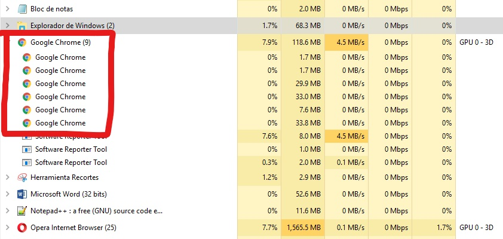
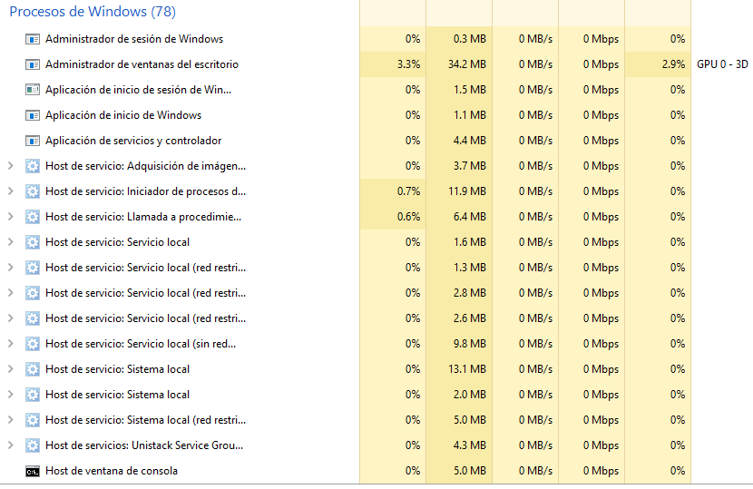

Concurrencia en Windows
Concurrencia
Es la capacidad de un programa para correr actividades o tareas de manera simultanea.
Los procesos de una computadora son concurrentes si existen simultáneamente. Los procesos concurrentes pueden funcionar en forma totalmente independiente unos de otros, o pueden ser asíncronos, lo cual significa que en ocasiones requieren cierta sincronización o cooperación.

La concurrencia puede presentarse en tres contextos diferentes:
-

1 Varias aplicaciones
Para este caso se invento la multiprogramación, esto para permitir que el tiempo de procesador de la máquina fuese compartido dinámicamente entre varios trabajos o aplicaciones activas. No necesito tener abierto Word para poder escuchar musica ¿O si?, cada programa en este caso es independiente del otro.
Procesos
Al abrir el administrador de tareas podemos ver que cada programa utilizado se ejecuta como una tarea o proceso diferente, cada una trabajando al mismo tiempo de forma independiente.
-

2 Aplicaciones estructuradas
Como ampliación de los principios del diseño modular y la programación estructurada, algunas aplicaciones pueden implementarse eficazmente como un conjunto de procesos concurrentes. Esto quiere decir, que existen programas que por lo regular para funcionar requieren ejecutar varias tareas a la vez o tener varios hilos de ejecución.
Hilos
Podemos apreciar que algunas tareas en ejecucion tienen sus propios hilos, que vendrían siendo subprocesos del programa principal.
-

3 Estructura del sistema operativo
Un Sistema Operativo es básicamente un conjunto de programas que se ejecutan concurrentemente para ofrecerte la mejor experiencia de trabajo. Si ponemos un ejemplo práctico podríamos mencionar todos los servicios de Windows, desde el servicio de cola de impresión hasta el servicio de actualización de Windows update, cada uno de estos son procesos que se ejecutan en segundo plano.
Procesos de Windows
Si cerramos por error podemos causar un mal funcionamiento de Windows o inclusive dañarlo.
Sistemas de sincronización entre hilos sobre Windows
En windows podemos encontrar diferentes métodos para sincronizar hilos como lo pueden ser:
Secciones Críticas
Las secciones criticas son ampliamente conocidas por los desarrolladores de windows en lenguajes
como C y C++, estas proveen el acceso exclusivo a una porción de código ubicada entre
"EnterCriticalSection" y "LeaveCriticalSection", aunque también a menudo causan dolores de cabeza
con los deadlocks producto tanto de olvidos en el código como de posibles fallos del mismo.
Semáforos
Los semáforos limitan la ejecución simultánea de un código (procedimiento, línea de código, etc.) a uno o más hilos en un momento dado. Un semáforo se puede compartir entre varias aplicaciones.
Mutex
Un objeto mutex es un objeto de sincronización cuyo estado se establece en señalado cuando no es propiedad de ningún subproceso y no señalado cuando sí lo es. Solo un subproceso a la vez puede poseer un objeto mutex, cuyo nombre proviene del hecho de que es útil para coordinar el acceso mutuamente excluyente a un recurso compartido. Por ejemplo, para evitar que dos subprocesos escriban en la memoria compartida al mismo tiempo, cada subproceso espera la propiedad de un objeto mutex antes de ejecutar el código que accede a la memoria. Después de escribir en la memoria compartida, el subproceso libera el objeto mutex.
Eventos
Una de las herramientas más importantes que nos ofrece Microsoft en sus Sistemas Operativos Windows, tanto de hogar como a nivel empresarial, es sin dudas el visor de eventos ya que desde esta herramienta tenemos acceso a todos los sucesos que han acontecido en el Sistema Operativo durante todo el tiempo de actividad.
SpinLocks
El bloqueo más común en el kernel de Linux es un bloqueo giratorio.Los spinlocks pueden mantenerse como máximo
por un hilo ejecutable. Si un subproceso de ejecución intenta adquirir un bloqueo de giro que ya está retenido,
el subproceso continuará haciendo un giro de bucle ocupado esperando que el bloqueo vuelva a estar disponible.
Si el bloqueo no está en disputa, el hilo en ejecución que solicita el bloqueo puede obtenerlo inmediatamente
y continuar la ejecución. En cualquier momento, un bloqueo de giro puede evitar que más de un hilo de ejecución
entre en la sección crítica al mismo tiempo.
Un spinlock en disputa hace que el hilo solicitante gire mientras espera que el bloqueo vuelva a estar disponible
(especialmente perdiendo el tiempo del procesador). Este comportamiento es el punto principal de un spinlock.
Los controladores para Microsoft Windows XP y versiones posteriores de Windows pueden usar
KeAcquireInStackQueuedSpinLock y KeReleaseInStackQueuedSpinLock para adquirir y liberar el bloqueo de giro como un bloqueo de giro en cola. Los bloqueos
de giro en cola proporcionan un mejor rendimiento que los bloqueos de giro ordinarios para bloqueos de alta contención en
máquinas multiprocesador. Para obtener más información, consulte Bloqueos de giro en cola. Los controladores para Windows
2000 pueden usar KeAcquireSpinLock y KeReleaseSpinLock para adquirir y liberar un bloqueo giratorio como un bloqueo giratorio normal.